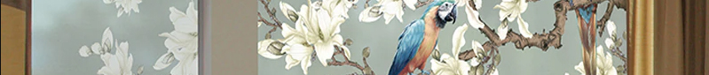
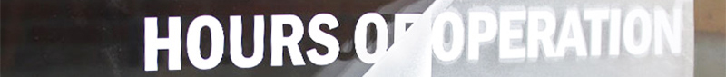

Trabajo con vinilos
- Material plástico de fácil colocación y mucha resistencia.
- Puede tener fines Comerciales, Estéticos, Señaléticos y demás.

Tipos de vinilos y superficies aptas para su colocación
- Tipos de Vinilos
- Vinilos Opacos (Mate y Brillante)
- Vinilos Transparentes
- Vinilos Translúcidos
- Vinilos Especiales (Metalizados, Termovinilo, Microperforado, Reflectivo, etc.)
- Tipos de superficies aptas para su colocación
- Vidrio y Acrílico
- Madera
- Chapa y metales
- Plásticos

Técnicas que se pueden aplicar en los vinilos
- Corte con plotter
- Se aplica con transfer despues de sacar exedentes
- Impresión en plotter o serigrafía
- Con o sin corte se aplica sobre superficies
- Modelado con calor
- Se aplica sobre superficie moldeandolo con pistola de calor